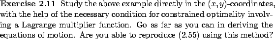

Next: 2.6 Second-order conditions
Up: 2.5.2 Non-integral constraints
Previous: 2.5.2 Non-integral constraints
Contents
Index
2.5.2.1 Holonomic constraints
Consider the special case when
the constraint function  does not depend on
does not depend on  , so that the constraints
take the form
, so that the constraints
take the form
 |
(2.53) |
Alternatively, we might be able to
integrate the constraints (2.52) to bring them to this form.
We then say that the constraints are holonomic.
The equation (2.54) gives us a constraint surface in the  -space, and we have two options
for studying our constrained optimization problem.
The first one is to use the previous necessary condition
involving a Lagrange multiplier function.
The second option is to find fewer independent variables that parameterize
the constraint surface,
and reformulate the problem in terms of these variables.
The
problem then becomes an unconstrained one, and can be studied via the usual Euler-Lagrange
equation.
Sometimes this latter approach turns out to be more effective.
-space, and we have two options
for studying our constrained optimization problem.
The first one is to use the previous necessary condition
involving a Lagrange multiplier function.
The second option is to find fewer independent variables that parameterize
the constraint surface,
and reformulate the problem in terms of these variables.
The
problem then becomes an unconstrained one, and can be studied via the usual Euler-Lagrange
equation.
Sometimes this latter approach turns out to be more effective.


In control theory, one is often more interested in the opposite
situation where the constraints are nonholonomic,
i.e.,
cannot be integrated. In this case, two arbitrary points in the
-space
can be connected by a path satisfying the constraints, and there is
no lower-dimensional constraint surface.
Next: 2.6 Second-order conditions
Up: 2.5.2 Non-integral constraints
Previous: 2.5.2 Non-integral constraints
Contents
Index
Daniel
2010-12-20